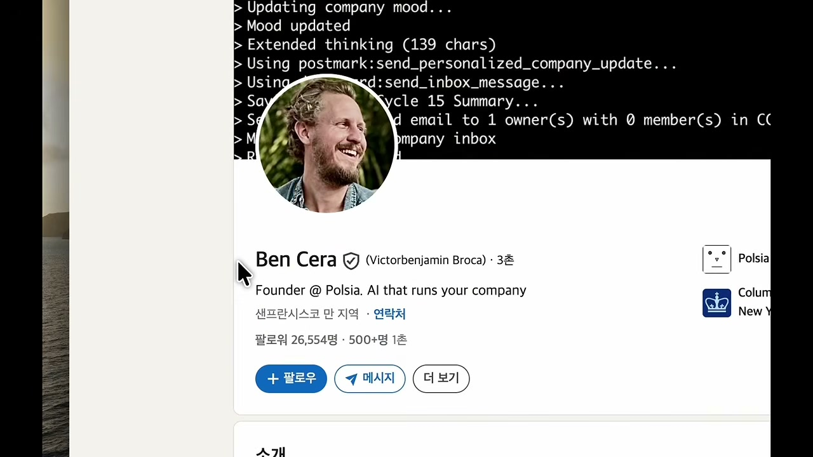
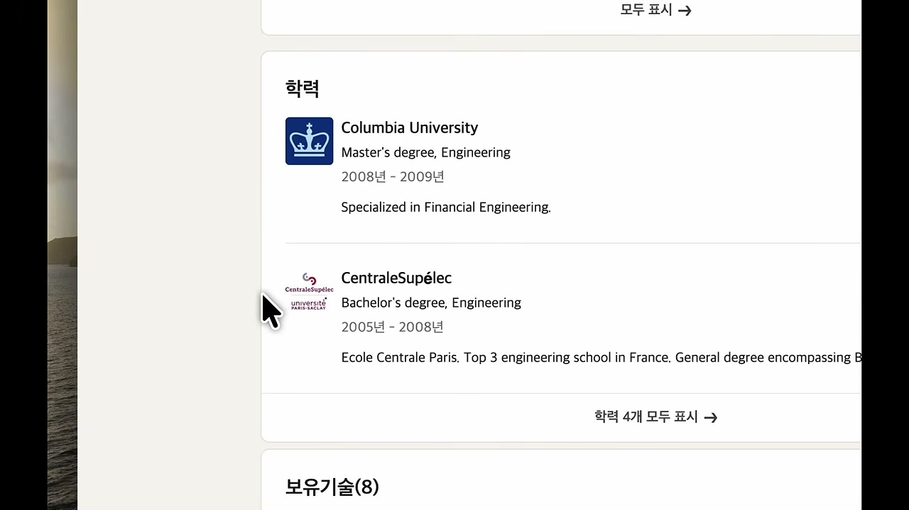
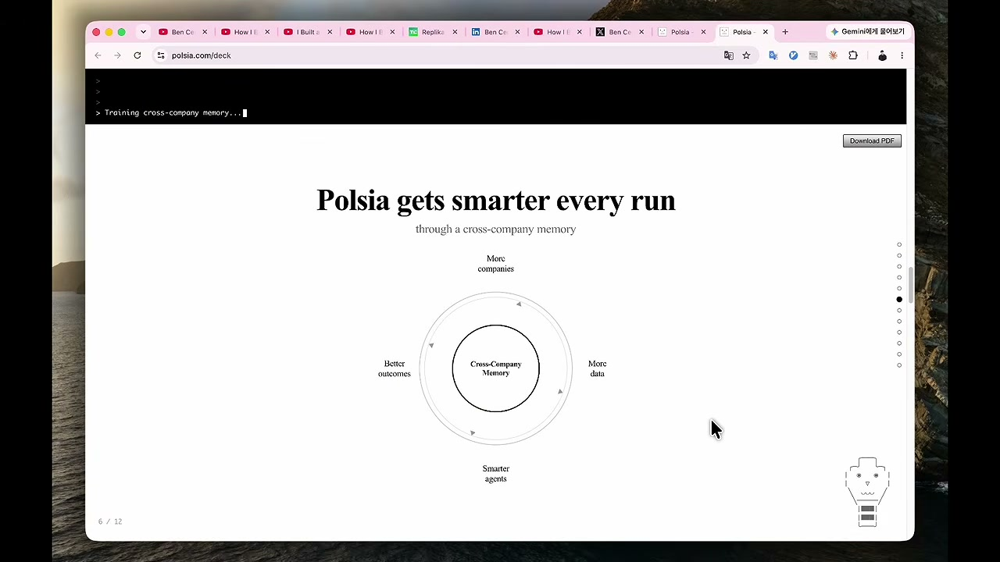
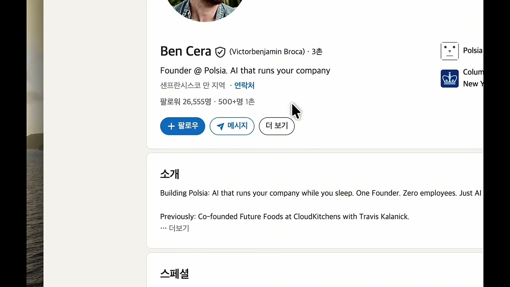
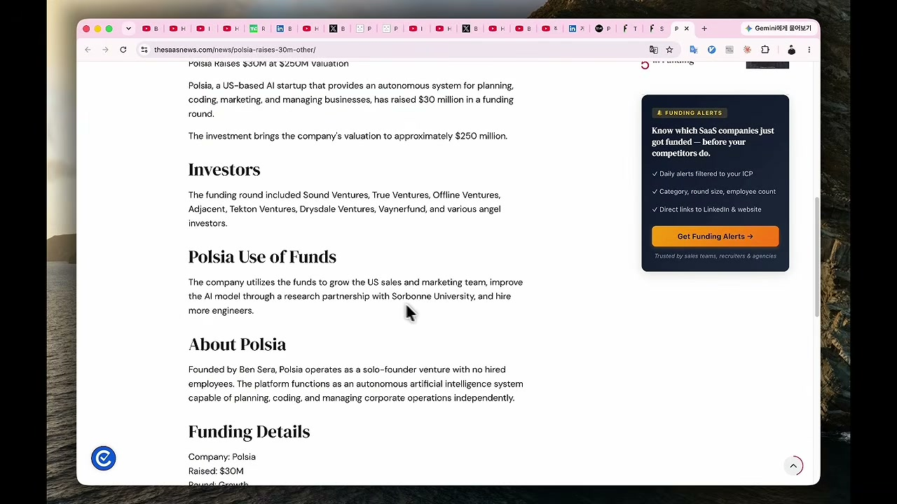
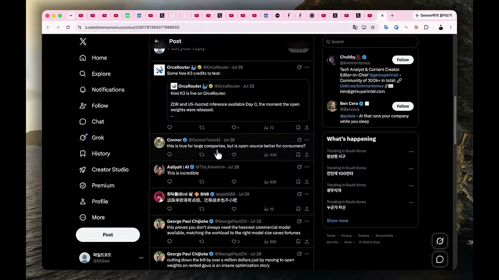

채널: 마일드코드 | 길이: 10:42 | 날짜: 20260830
직원 없이 AI로 서비스를 출시하고 운영하는 창업가 벤세라가 8개월도 안 돼 연간 반복 매출 100억 원을 넘겼다. 그의 서비스 Polsia는 고객에게 '잠들지 않는 AI 창업자'를 제공한다. 영상 초반에 공개된 실제 구동 화면은 터미널에 찍히는 에이전트 로그다. "Updating company mood...", "Extended thinking", "Using postmark:send_personalized_company_update" 같은 줄들이 이어지며 회사 무드 업데이트부터 맞춤 회사 소식 발송, 인박스 메시지 전송, 사이클 요약까지 AI가 스스로 실행하고 있었다.

벤세라의 링크드인 프로필에는 "Founder @ Polsia. AI that runs your company"라고 적혀 있고, 팔로워는 2만 6천 명을 넘는다. 샌프란시스코 베이 지역 기반이다.
화자는 벤세라가 회사 만드는 과정을 유튜브 다큐로 전부 올려놓았고 자신은 그걸 다 봤다며, 시청 포인트 세 가지를 예고한다. 첫째는 Polsia 전에 만든 제품 이야기, 즉 똑같은 제품을 만든 경쟁자에게 마케팅에서 밀린 회고다. 둘째는 첫 유료 고객 10명을 어떻게 만들었는지다. 셋째는 한 달 AI 비용 청구서가 14억 원까지 나와 본인 말로 파산 직전까지 갔던 이야기다.
벤세라는 LA에 있을 때 '블랭크스'라는 제품을 만들었다. 출시하고 세 달 뒤 어떤 회사가 사실상 똑같은 제품을 냈는데, 그 회사 창업자가 잘한 건 코딩이 아니었다. 트위터에서 창업자 마케팅을 기가 막히게 했고, 결과적으로 유명한 벤처캐피탈에서 우리 돈으로 280억 원을 투자받았으며 트위터에서는 다들 그 사람 얘기만 했다. 벤세라는 그 제품을 놓아버렸고, 이를 "나는 마케팅 전쟁에서 졌다"고 표현했다. 같은 제품을 만들어 놓고 실패한 것이다.
"실력이 없어서 실패했나 보다 싶으시죠? 저도 그럴 줄 알고 링크드인을 열어봤는데요. 솔직히 좀 당황스러웠어요." 화자의 말이다. 벤세라는 컬럼비아 공대를 나왔고 바클레이즈에서 금융상품 만드는 부사장까지 했으며, 창업 후에는 한 회사에서 CTO를 맡아 파운더스 펀드에서 240억 원을 투자받았다. 그다음 간 회사가 우버 창업자 트래비스 캘러닉이 세운 클라우드키친이었고, 벤세라는 그곳의 두 번째 직원이었다. 20년 가까이 제품 만들고 사업하던 사람이 마케팅 하나 때문에 자신의 사업에서 실패한 것이다. 그래서 화자는 묻는다. 만드는 실력 말고 무엇이 더 있어야 할까.

링크드인 학력란에는 컬럼비아대 공학 석사(2008~2009년, 금융공학 전공)와 프랑스 명문 공대 CentraleSupélec 공학 학사(2005~2008년)가 나란히 올라 있다. 보유 기술은 8개가 등록되어 있다.
실패작을 놓으면서 벤세라가 내린 결론은 "만드는 건 정말 쉽다. 그런데 무언가를 진짜로 되게 만드는 건 어렵다"였다. 덧붙여 샌프란시스코로 옮겨서 온라인에 자신을 드러내고 성장에 전부를 걸지 않으면 안 될 거라고 생각했다고 본인 표현 그대로 전해진다. 만드는 쪽이 아니라 알려지는 쪽에 전부를 걸기로 한 것이다. 실제로 2025년에는 아홉 달 동안 하루 12시간씩 AI와 대화했다고 글을 올렸고, 그 끝에 12월 Polsia가 나왔다.
Polsia는 한마디로 AI가 회사를 대신 차려주고 굴려주는 서비스다. 가입하면 사업 아이템부터 AI가 정해 준다. '서프라이즈 미' 버튼을 누르면 내 배경을 조사해서 사업을 제안해 주고, 웹서버부터 결제 계정까지 몇 시간 만에 세팅해 준다. 다음으로 여덟 개 역할을 AI가 나눠 맡는다. 개발, 영업, 광고, 리서치, 버그 감시, 고객 응대, 결제, 소셜미디어 전부다. 매일 밤 CEO 역할을 하는 인스턴스가 깨어나서 무엇을 할지 정하고 실행까지 한다. 여기에는 제일 좋은 모델을 붙인다고 한다. 방향을 정하는 자리이기 때문이다. 벤세라가 이를 한 문장으로 정리한 것이 "챗GPT한테 마케팅 어떻게 하냐고 물어보면 방법을 알려주죠. 그런데 Polsia는 '제가 메타 광고 돌릴게요. 제가 콜드 메일 보낼게요. 제가 유튜브 채널 만들어 드릴게요'라고 나온다는 거예요"다. 묻는 사람에게는 방법이, 시키는 사람에게는 결과가 아닌 실행이 돌아간다는 대비다.
투자 유치 덱(polsia.com/deck)에 실린 플라이휠 다이어그램은 이 구조의 성장 논리를 보여준다. 가운데 'Cross-Company Memory(회사들을 넘나드는 공유 기억)'를 두고, 회사가 많아질수록 데이터가 쌓이고, 에이전트가 똑똑해지며, 성과가 좋아지고, 다시 회사가 늘어나는 순환이다. 제목 그대로 "Polsia gets smarter every run", 실행할수록 똑똑해지는 구조다.

"첫 단계는 고객 한 명 만나서 열 명을 만드느냐였다"는 것이 벤세라의 다큐 속 말이다. 출시 당일에 대한 표현은 "출시하는 날은 정적이다. 아무도 제품을 모른다. 그런데 진짜 일은 거기서부터 시작된다"다. 그래서 한 일은 소박했다. 전에 실패한 제품들에서 모아둔 이메일 주소로 뉴스레터를 보냈고("블랭크스 만든 사람이 새 제품을 냈다고요"), 아는 사람 전부에게 연락했다. 본인 말로는 "한 번 정도 보내는 것은 못 볼 수도 있고 어차피 아무도 화 안 낸다"는 것이다. 그리고 트위터에서 '리플 가이'가 됐다. 하루에 답글을 100개씩 달았고 AI 도움도 받았다. 자신의 생일 파티 포스터를 만들면서 한쪽에 polsia.com 협찬이라고 박아 200명에게 뿌렸다. 이렇게 해서 얻은 것이 가입자 500명, 유료 고객 100명이었다. 목표 10명의 열 배였다.
벤세라는 지금 가장 큰 무기라고 하는 것이 따로 있는데, 바로 유튜브다. 채널을 만들기 전 창업자 일상을 찍어 올리는 유튜버에게 먼저 연락했고, 그 사람이 다음 날 바로 와서 하루 종일 찍어준 영상이 그 채널에서 가장 잘된 영상이 됐다. 이를 보고 자기 채널을 시작했는데, 지금은 자기 회사 만드는 과정을 다큐로 올린다. 일주일에 한 편이 목표이며 AI 모델 청구서가 얼마나 나왔는지까지 다 공개한다. 채널 이름은 'AI 슬라프'인데, Polsia를 거꾸로 쓴 것이다. 본인이 링크드인에 써놓은 문장은 "유료 고객 0명에서 만 명까지 가는 데 열 가지가 넘는 방법을 썼는데, 그중에서 제일 레버리지가 컸던 건 유튜브 채널을 시작한 것"이다. 다큐 마지막 멘트는 "이제 전부가 마케팅이다. 그리고 마케팅에서 제일 강력한 도구 중 하나가 스토리텔링이다"다.
링크드인 소개란은 이 정체성을 압축한다. "Building Polsia: AI that runs your company while you sleep. One Founder. Zero employees. Just AI(자면서 회사를 굴리는 AI를 만듭니다. 창업자 1명. 직원 0명. 오직 AI뿐)", 그리고 "Previously: Co-founded Future Foods at CloudKitchens with Travis Kalanick(이전: 트래비스 캘러닉과 클라우드키친에서 퓨처푸드 공동창업)"이다.

유료 고객 100명에서 출발한 뒤 숫자는 가팔랐다. 투자사가 공개한 자료 기준 출시 한 달 만에 연 환산 매출 14억, 두 달 만에 42억, 3월 포춘이 취재할 때는 64억이었다. 5월에는 애슈턴 커처가 이끄는 벤처캐피탈에서 430억 원을 투자받았고 회사 가치는 3,500억 원으로 매겨졌다. 8월에는 유료 고객 1만 명 돌파를 발표했다. 창업하고 여덟 달 만이다.
해외 SaaS 매체의 투자 보도 화면도 영상에 나온다. "Polsia Raises $30M at $250M Valuation(3천만 달러 유치, 기업가치 2억 5천만 달러)"라는 제목 아래 투자사로 Sound Ventures, True Ventures, Offline Ventures, Adjacent, Tekton Ventures, Drysdale Ventures, Vaynerfund와 여러 엔젤투자자가 거명된다. 자금 용도는 미국 영업·마케팅팀 확대, 소르본대와의 연구 협력으로 AI 모델 고도화, 엔지니어 추가 채용이다. 본문은 "창업자 1명, 고용된 직원 없이 계획·코딩·경영을 독립적으로 수행하는 자율 AI 시스템"이라고 회사를 소개한다.

잘 풀린 것 같던 회사에 구멍이 있었다. 버는 만큼 그대로 태우고 있었던 것이다. AI 모델이 비싸다는 건 처음부터 알고 있었지만 "고객이 이 제품을 진짜 원하는지부터 알아내는 게 먼저"라 상관없다고 생각했다. 그러다 3월 사용자가 500명에서 5,000명으로 확 뛰면서 인프라가 무너지기 시작했다. 처음엔 손익분기를 맞춰 보려고 노력했지만, 사람들이 생각보다 훨씬 길고 복잡한 작업을 시키면서 비용 감당이 안 됐고, 청구는 결국 한 달에 100만 달러, 우리 돈 14억 원을 넘겼다.
이를 가장 먼저 알아챈 건 벤세라가 아니라 함께하는 친구였다. 4월에 청구서를 보고 "야, 너 이번 달 AI 요금 100만 달러로 가고 있어. 이거 완전히 미친 거야"라는 연락이 왔다. 벤세라는 "알아. 그런데 나 방금 투자 받았잖아. 지금은 괜찮아"라고 대수롭지 않게 받았다가, 친구의 "아니, 내가 보기엔 안 괜찮은데" 한 마디와 한참 대화 끝에 "맞네. 우리 지금 안 괜찮네. 그럼 뭘 해야 되지?"라며 인정했다.
대책은 제일 좋은 모델을 그만 쓰는 것이었다. GPU를 빌려 오픈소스 모델을 돌렸고 데이터센터까지 가서 서버랙을 직접 받았다. 이 작업으로 두 달 뒤인 6월 AI 모델 사용료는 1억 4천만 원으로 떨어졌다. 10분의 1이다. 가능했던 이유는 사용자들이 요청하는 일 대부분이 단순한 작업이라 제일 비싼 모델이 필요 없었기 때문이다. 다만 전략을 정하는 CEO 자리에는 제일 좋은 모델을 그대로 둔다고 했다. 화자는 여기서 "좋은 도구를 쓴다고 다 되는 게 아니라 AI를 제대로 이해하고 쓸 줄 아는 게 결과를 완전히 가른다"는 교훈을 뽑는다.
이 비용 최적화 스토리는 X에서도 화제였다. 벤세라(@Bencera, "AI that runs your company while you sleep") 관련 게시물 답글에는 "가장 무거운 모델을 항상 쓸 필요는 없으며 작업량에 모델을 맞추면 큰돈을 아낄 수 있다", "렌탈 GPU의 오픈 웨이트로 옮겨 청구서를 백만 달러 넘게 깎은 것은 엄청난 최적화 사례다" 같은 반응이 달렸다.

Polsia로 돈을 내고 회사를 만든 사람이 1만 명을 넘었지만, 벤세라 본인 인터뷰에 따르면 그중 단 1달러라도 번 회사는 열에 하나다. AI가 코드도 짜주고 광고도 돌려주고 영업까지 해주는데도 열 중 아홉은 1달러도 못 벌었다는 것이다. 실제로 Polsia로 브랜드를 만들어 굴려본 사람의 후기가 있다. "성공을 좁게 정의할수록 Polsia는 더 잘 작동하기 시작한다"는 문장 그대로다. 통째로 맡기면 안 되고 무엇을 시킬지는 내가 정해줘야 한다는 뜻이다. 같은 AI를 쓰는데 결과가 완전히 갈렸고, 그 차이는 벤세라의 일하는 방식을 보면 답이 나온다.
벤세라는 실행의 80%를 AI에게 넘겼다. 코드는 이제 읽지도 않는다고 한다. 나머지 20%에 남긴 것은 인터뷰에서 정확히 정의했다. 취향, 창의성, 방향, 그리고 "AI를 다른 사람들한테 의미 있는 무언가로 이끄는 것"이다. 예시도 직접 들었다. "이 기능 배포하고 A/B 테스트 돌려"는 AI가 한다. 그런데 "B2C에서 B2B로 방향을 틀까?"는 본인이 한다.
그렇다면 20년 경력에서 쌓인 것은 무엇일까. 코딩이 아니다. 코딩은 오히려 AI에게 제일 먼저 넘겼다. 취향과 방향, 즉 AI에게 무엇을 맡기고 무엇을 자신이 할지 정하는 판단이 바로 그 경력에서 쌓인 것이며, 그 판단도 20년 내내 쌓기만 한 게 아니라 마케팅에서 크게 실패하고 청구서 비용이 한번 터지고 나서 알아낸 것이다.
화자에게 다행인 소식이 하나 있다. 이 정도 실력을 쌓는 데 20년이 걸리는 게 아니라는 것이다. AI로 제대로 만드는 법을 알면 된다. 화자는 시리즈B AI 스타트업에서 풀스택 프로덕트 엔지니어로 일하고 회사 밖에서는 엣지링크라는 유료 서비스를 직접 운영하며 매일 굴러가는 것을 모니터링하는 입장이라 벤세라 얘기가 남 얘기 같지 않았다고 한다.
"제가 해봐도 확실히 만드는 건 진짜 쉬워졌거든요. 저도 클로드 코드로 하루 만에 기능 하나 붙이는 거 아주 쉽게 합니다. 그런데 만들고 나서가 문제예요." 벤세라의 말 "만드는 건 쉽다. 그런데 진짜로 되게 만드는 건 어렵다"에 대한 화자식 번역이다. AI는 다 됐다고 하는데 실제로는 안 굴러가고, 기능 하나 붙였는데 멀쩡하던 데가 다 깨지는 것, 유료로 운영되는 서비스에서는 이 모든 게 곧 사고다. 그래서 화자는 어디까지 AI에게 맡기고 어디서 자신이 잡을지부터 정해 놓고 개발한다. 벤세라가 AI에게 안 넘긴 그 20%가 정확히 여기라는 것이다. 그리고 "이건 도구를 바꾼다고 되는 게 아니라 한 번은 제대로 배워야 되는 겁니다. 그 제대로 만드는 법"을, 바이브코딩이라는 말을 만든 안드레 카르파시의 인사이트와 함께 다른 영상에서 다뤘다고 밝힌다. "AI가 다 됐다"는 말을 못 하게 막는 장치까지 실제 돌아가는 화면으로 보여주며, 링크는 영상 설명 첫 줄과 고정 댓글에 있다.
"나는 마케팅 전쟁에서 졌다." — 블랭크스 실패를 회고하는 벤세라의 표현 그대로
"만드는 건 정말 쉽다. 그런데 무언가를 진짜로 되게 만드는 건 어렵다." — 실패작을 정리하며 내린 벤세라의 결론
"출시하는 날은 정적이다. 아무도 제품을 모른다. 그런데 진짜 일은 거기서부터 시작된다." — 출시 당일에 대한 벤세라의 정의
"Building Polsia: AI that runs your company while you sleep. One Founder. Zero employees. Just AI." — 벤세라 링크드인 소개란
"유료 고객 0명에서 만 명까지 가는데 열 가지가 넘는 방법을 썼는데 그중에서 제일 레버리지가 컸던 건 유튜브 채널을 시작한 거였다." — 벤세라 링크드인
"이제 전부가 마케팅이다. 그리고 마케팅에서 제일 강력한 도구 중 하나가 스토리텔링이다." — 벤세라 다큐의 결론
"성공을 좁게 정의할수록 Polsia는 더 잘 작동하기 시작한다." — Polsia 실사용자의 후기 문장 그대로
"야, 너 이번 달 AI 요금 100만 달러로 가고 있어. 이거 완전히 미친 거야." — 청구서를 보고 연락한 벤세라의 친구
이 영상의 핵심 메시지는 AI 시대의 승패가 '만드는 능력'이 아니라 '되게 만드는 능력'에서 갈린다는 것이다. 20년차 엘리트 개발자도 마케팅에서 지면 같은 제품을 놓고 졌고, 반대로 마케팅과 스토리텔링에 전부를 건 뒤에는 직원 없이 8개월 만에 ARR 100억 원을 만들었다. 실용적 시사점은 분명하다. 첫째, 출시 당일의 정적을 당연하게 받아들이고 유료 고객 10명 같은 작고 구체적인 목표부터 잡을 것. 둘째, 하루 답글 100개와 다큐 공개 같은 지루하고 꾸준한 알리기를 자동화하려 하지 말고 직접 할 것. 셋째, AI 비용은 전략 자리와 실행 자리를 분리해 모델을 차등 배치할 것. 넷째, AI에게 일을 통째로 넘기지 말고 성공을 좁게 정의해 시킬 일을 사람이 정할 것. 다섯째, 취향·창의성·방향이라는 인간의 20%를 키우는 데 시간을 쓸 것. AI가 코드를 대신 쓰는 시대에 인간에게 남은 진짜 일은 무엇을 만들지, 무엇을 맡길지 정하는 판단이며, 그 판단은 실패와 청구서 같은 값비싼 수업료로 단련된다는 것이 벤세라와 화자가 함께 전하는 결론이다.
댓글
GitHub 이슈 기반 댓글 시스템입니다.